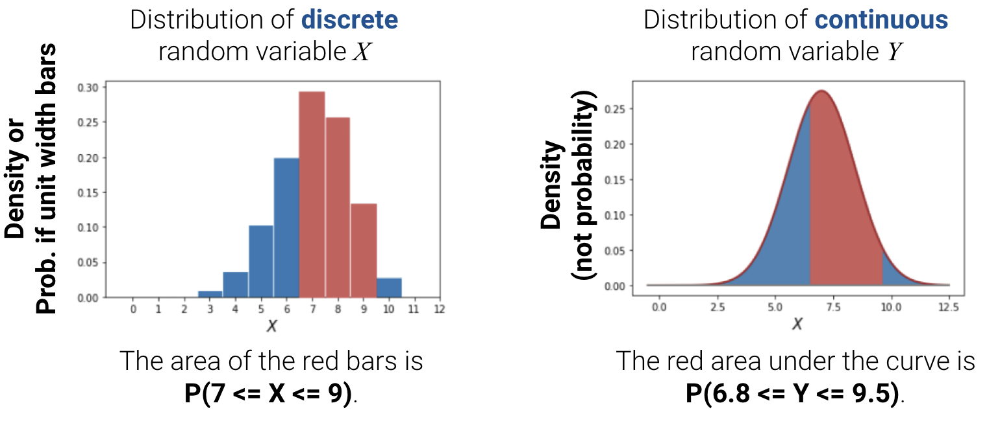
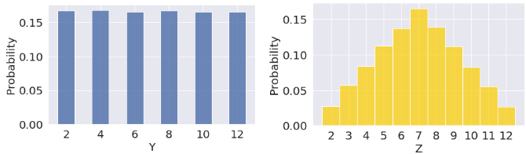
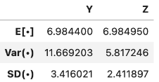

17 Random Variables
In the past few lectures, we’ve examined the role of complexity in influencing model performance. We’ve considered model complexity in the context of a tradeoff between two competing factors: model variance and training error.
So far, our analysis has been mostly qualitative. We’ve acknowledged that our choice of model complexity needs to strike a balance between model variance and training error, but we haven’t yet discussed why exactly this tradeoff exists.
To better understand the origin of this tradeoff, we will need to dive into random variables. The next two course notes on probability will be a brief digression from our work on modeling so we can build up the concepts needed to understand this so-called bias-variance tradeoff. In specific, we will cover:
- Random Variables: introduce random variables, considering the concepts of expectation, variance, and covariance
- Estimators, Bias, and Variance: re-express the ideas of model variance and training error in terms of random variables and use this new perspective to investigate our choice of model complexity
We’ll go over just enough probability to help you understand its implications for modeling, but if you want to go a step further, take Data 140, CS 70, and/or EECS 126.
In Data 100, we want to understand the broader relationship between the following:
- Population parameter: a number that describes something about the population
- Sample statistic: an estimate of the number computed on a sample
17.1 Random Variables and Distributions
Suppose we generate a set of random data, like a random sample from some population. A random variable is a function from the outcome of a random event to a number.
It is random since our sample was drawn at random; it is variable because its exact value depends on how this random sample came out. As such, the domain or input of our random variable is all possible outcomes for some random event in a sample space, and its range or output is the real number line. We typically denote random variables with uppercase letters, such as \(X\) or \(Y\). In contrast, note that regular variables tend to be denoted using lowercase letters. Sometimes we also use uppercase letters to refer to matrices (such as your design matrix \(\mathbb{X}\)), but we will do our best to be clear with the notation.
To motivate what this (rather abstract) definition means, let’s consider the following examples:
17.1.1 Example: Tossing a Coin
Let’s formally define a fair coin toss. A fair coin can land on heads (\(H\)) or tails (\(T\)), each with a probability of 0.5. With these possible outcomes, we can define a random variable \(X\) as: \[X = \begin{cases} 1, \text{if the coin lands heads} \\ 0, \text{if the coin lands tails} \end{cases}\]
\(X\) is a function with a domain, or input, of \(\{H, T\}\) and a range, or output, of \(\{1, 0\}\). In practice, while we don’t use the following function notation, you could write the above as \[X = \begin{cases} X(H) = 1 \\ X(T) = 0 \end{cases}\]
17.1.2 Example: Sampling Data 100 Students
Suppose we draw a random sample \(s\) of size 3 from all students enrolled in Data 100.
We can define \(Y\) as the number of data science students in our sample. Its domain is all possible samples of size 3, and its range is \(\{0, 1, 2, 3\}\).

Note that we can use random variables in mathematical expressions to create new random variables.
For example, let’s say we sample 3 students at random from lecture and look at their midterm scores. Let \(X_1\), \(X_2\), and \(X_3\) represent each student’s midterm grade.
We can use these random variables to create a new random variable, \(Y\), which represents the average of the 3 scores: \(Y = (X_1 + X_2 + X_3)/3\).
As we’re creating this random variable, a few questions arise:
- What can we say about the distribution of \(Y\)?
- How does it depend on the distribution of \(X_1\), \(X_2\), and \(X_3\)?
But, what exactly is a distribution? Let’s dive into this!
17.1.3 Distributions
To define any random variable \(X\), we need to be able to specify 2 things:
- Possible values: the set of values the random variable can take on.
- Probabilities: the set of probabilities describing how the total probability of 100% is split over the possible values.
If \(X\) is discrete (has a finite number of possible values), the probability that a random variable \(X\) takes on the value \(x\) is given by \(P(X=x)\), and probabilities must sum to 1: \(\sum_{\text{all } x} P(X=x) = 1\),
We can often display this using a probability distribution table. In the coin toss example, the probability distribution table of \(X\) is given by.
| \(x\) | \(P(X=x)\) |
|---|---|
| 0 | \(\frac{1}{2}\) |
| 1 | \(\frac{1}{2}\) |
The distribution of a random variable \(X\) describes how the total probability of 100% is split across all the possible values of \(X\), and it fully defines a random variable. If you know the distribution of a random variable you can:
- compute properties of the random variables and derived variables
- simulate the random variables by randomly picking values of \(X\) according to its distribution using
np.random.choice,df.sample, orscipy.stats.<dist>.rvs(...)
The distribution of a discrete random variable can also be represented using a histogram. If a variable is continuous, meaning it can take on infinitely many values, we can illustrate its distribution using a density curve.

We often don’t know the (true) distribution and instead compute an empirical distribution. If you flip a coin 3 times and get {H, H, T}, you may ask —— what is the probability that the coin will land heads? We can come up with an empirical estimate of \(\frac{2}{3}\), though the true probability might be \(\frac{1}{2}\).
Probabilities are areas. For discrete random variables, the area of the red bars represents the probability that a discrete random variable \(X\) falls within those values. For continuous random variables, the area under the curve represents the probability that a discrete random variable \(Y\) falls within those values.

If we sum up the total area of the bars/under the density curve, we should get 100%, or 1.
We can show the distribution of \(Y\) in the following tables. The table on the left lists all possible samples of \(s\) and the number of times they can appear (\(Y(s)\)). We can use this to calculate the values for the table on the right, a probability distribution table.

Rather than fully write out a probability distribution or show a histogram, there are some common distributions that come up frequently when doing data science. These distributions are specified by some parameters, which are constants that specify the shape of the distribution. In terms of notation, the ‘~’ means “has the probability distribution of”.
These common distributions are listed below:
- Bernoulli(\(p\)): If \(X\) ~ Bernoulli(\(p\)), then \(X\) takes on a value 1 with probability \(p\), and 0 with probability \(1 - p\). Bernoulli random variables are also termed the “indicator” random variables.
- Binomial(\(n\), \(p\)): If \(X\) ~ Binomial(\(n\), \(p\)), then \(X\) counts the number of 1s in \(n\) independent Bernoulli(\(p\)) trials.
- Categorical(\(p_1, ..., p_k\)) of values: The probability of each value is 1 / (number of possible values).
- Uniform on the unit interval (0, 1): The density is flat at 1 on (0, 1) and 0 elsewhere. We won’t get into what density means as much here, but intuitively, this is saying that there’s an equally likely chance of getting any value on the interval (0, 1).
- Normal(\(\mu\), \(\sigma^2\)): The probability density is specified by \(\frac{1}{\sqrt{2\pi}}e^{-\frac{1}{2}\frac{(x-\mu)^2}{\sigma^2}}\). This bell-shaped distribution comes up fairly often in data, in part due to the Central Limit Theorem you saw back in Data 8.
17.2 Expectation and Variance
There are several ways to describe a random variable. The methods shown above —— a table of all samples \(s, X(s)\), distribution table \(P(X=x)\), and histograms —— are all definitions that fully describe a random variable. Often, it is easier to describe a random variable using some numerical summary rather than fully defining its distribution. These numerical summaries are numbers that characterize some properties of the random variable. Because they give a “summary” of how the variable tends to behave, they are not random. Instead, think of them as a static number that describes a certain property of the random variable. In Data 100, we will focus our attention on the expectation and variance of a random variable.
17.2.1 Expectation
The expectation of a random variable \(X\) is the weighted average of the values of \(X\), where the weights are the probabilities of each value occurring. There are two equivalent ways to compute the expectation:
- Apply the weights one sample at a time: \[\mathbb{E}[X] = \sum_{\text{all possible } s} X(s) P(s)\].
- Apply the weights one possible value at a time: \[\mathbb{E}[X] = \sum_{\text{all possible } x} x P(X=x)\]
The latter is more commonly used as we are usually just given the distribution, not all possible samples.
We want to emphasize that the expectation is a number, not a random variable. Expectation is a generalization of the average, and it has the same units as the random variable. It is also the center of gravity of the probability distribution histogram, meaning if we simulate the variable many times, it is the long-run average of the simulated values.
17.2.1.1 Example 1: Coin Toss
Going back to our coin toss example, we define a random variable \(X\) as: \[X = \begin{cases} 1, \text{if the coin lands heads} \\ 0, \text{if the coin lands tails} \end{cases}\]
We can calculate its expectation \(\mathbb{E}[X]\) using the second method of applying the weights one possible value at a time: \[\begin{align} \mathbb{E}[X] &= \sum_{x} x P(X=x) \\ &= 1 * 0.5 + 0 * 0.5 \\ &= 0.5 \end{align}\]
Note that \(\mathbb{E}[X] = 0.5\) is not a possible value of \(X\); it’s an average. The expectation of X does not need to be a possible value of X.
17.2.1.2 Example 2
Consider the random variable \(X\):
| \(x\) | \(P(X=x)\) |
|---|---|
| 3 | 0.1 |
| 4 | 0.2 |
| 6 | 0.4 |
| 8 | 0.3 |
To calculate it’s expectation, \[\begin{align} \mathbb{E}[X] &= \sum_{x} x P(X=x) \\ &= 3 * 0.1 + 4 * 0.2 + 6 * 0.4 + 8 * 0.3 \\ &= 0.3 + 0.8 + 2.4 + 2.4 \\ &= 5.9 \end{align}\]
Again, note that \(\mathbb{E}[X] = 5.9\) is not a possible value of \(X\); it’s an average. The expectation of X does not need to be a possible value of X.
17.2.2 Variance
The variance of a random variable is a measure of its chance error. It is defined as the expected squared deviation from the expectation of \(X\). Put more simply, variance asks: how far does \(X\) typically vary from its average value, just by chance? What is the spread of \(X\)’s distribution?
\[\text{Var}(X) = \mathbb{E}[(X-\mathbb{E}[X])^2]\]
The units of variance are the square of the units of \(X\). To get it back to the right scale, use the standard deviation of \(X\): \[\text{SD}(X) = \sqrt{\text{Var}(X)}\]
Like with expectation, variance and standard deviation are numbers, not random variables! Variance helps us describe the variability of a random variable. It is the expected squared error between the random variable and its expected value. As you will see shortly, we can use variance to help us quantify the chance error that arises when using a sample \(X\) to estimate the population mean.
By Chebyshev’s inequality, which you saw in Data 8, no matter what the shape of the distribution of \(X\) is, the vast majority of the probability lies in the interval “expectation plus or minus a few SDs.”
If we expand the square and use properties of expectation, we can re-express variance as the computational formula for variance.
\[\text{Var}(X) = \mathbb{E}[X^2] - (\mathbb{E}[X])^2\]
This form is often more convenient to use when computing the variance of a variable by hand, and it is also useful in Mean Squared Error calculations, as \(\mathbb{E}[X^2] = \text{Var}(X)\) if \(X\) is centered and \(E(X)=0\).
How do we compute \(\mathbb{E}[X^2]\)? Any function of a random variable is also a random variable. That means that by squaring \(X\), we’ve created a new random variable. To compute \(\mathbb{E}[X^2]\), we can simply apply our definition of expectation to the random variable \(X^2\).
\[\mathbb{E}[X^2] = \sum_{x} x^2 P(X = x)\]
17.2.3 Example: Die
Let \(X\) be the outcome of a single fair die roll. \(X\) is a random variable defined as \[X = \begin{cases} \frac{1}{6}, \text{if } x \in \{1,2,3,4,5,6\} \\ 0, \text{otherwise} \end{cases}\]
We can summarize our discussion so far in the following diagram:

17.3 Sums of Random Variables
Often, we will work with multiple random variables at the same time. A function of a random variable is also a random variable. If you create multiple random variables based on your sample, then functions of those random variables are also random variables.
For example, if \(X_1, X_2, ..., X_n\) are random variables, then so are all of these:
- \(X_n^2\)
- \(\#\{i : X_i > 10\}\)
- \(\text{max}(X_1, X_2, ..., X_n)\)
- \(\frac{1}{n} \sum_{i=1}^n (X_i - c)^2\)
- \(\frac{1}{n} \sum_{i=1}^n X_i\)
Many functions of random variables that we are interested in (e.g., counts, means) involve sums of random variables, so let’s dive deeper into the properties of sums of random variables.
17.3.1 Properties of Expectation
Instead of simulating full distributions, we often just compute expectation and variance directly. Recall the definition of expectation: \[\mathbb{E}[X] = \sum_{x} x P(X=x)\]
From it, we can derive some useful properties:
- Linearity of expectation. The expectation of the linear transformation \(aX+b\), where \(a\) and \(b\) are constants, is:
\[\mathbb{E}[aX+b] = aE[\mathbb{X}] + b\]
- Expectation is also linear in sums of random variables.
\[\mathbb{E}[X+Y] = \mathbb{E}[X] + \mathbb{E}[Y]\]
- If \(g\) is a non-linear function, then in general, \[\mathbb{E}[g(X)] \neq g(\mathbb{E}[X])\] For example, if \(X\) is -1 or 1 with equal probability, then \(\mathbb{E}[X] = 0\), but \(\mathbb{E}[X^2] = 1 \neq 0\).
17.3.2 Properties of Variance
Let’s now get into the properties of variance. Recall the definition of variance: \[\text{Var}(X) = \mathbb{E}[(X-\mathbb{E}[X])^2]\]
Combining it with the properties of expectation, we can derive some useful properties:
- Unlike expectation, variance is non-linear. The variance of the linear transformation \(aX+b\) is: \[\text{Var}(aX+b) = a^2 \text{Var}(X)\]
- Subsequently, \[\text{SD}(aX+b) = |a| \text{SD}(X)\]
- The full proof of this fact can be found using the definition of variance. As general intuition, consider that \(aX+b\) scales the variable \(X\) by a factor of \(a\), then shifts the distribution of \(X\) by \(b\) units.
- Shifting the distribution by \(b\) does not impact the spread of the distribution. Thus, \(\text{Var}(aX+b) = \text{Var}(aX)\).
- Scaling the distribution by \(a\) does impact the spread of the distribution.

- Variance of sums of random variables is affected by the (in)dependence of the random variables. \[\text{Var}(X + Y) = \text{Var}(X) + \text{Var}(Y) + 2\text{cov}(X,Y)\] \[\text{Var}(X + Y) = \text{Var}(X) + \text{Var}(Y) \qquad \text{if } X, Y \text{ independent}\]
17.3.3 Covariance and Correlation
We define the covariance of two random variables as the expected product of deviations from expectation. Put more simply, covariance is a generalization of variance to variance:
\[\text{Cov}(X, X) = \mathbb{E}[(X - \mathbb{E}[X])^2] = \text{Var}(X)\]
\[\text{Cov}(X, Y) = \mathbb{E}[(X - \mathbb{E}[X])(Y - \mathbb{E}[Y])]\]
We can treat the covariance as a measure of association. Remember the definition of correlation given when we first established SLR?
\[r(X, Y) = \mathbb{E}\left[\left(\frac{X-\mathbb{E}[X]}{\text{SD}(X)}\right)\left(\frac{Y-\mathbb{E}[Y]}{\text{SD}(Y)}\right)\right] = \frac{\text{Cov}(X, Y)}{\text{SD}(X)\text{SD}(Y)}\]
It turns out we’ve been quietly using covariance for some time now! If \(X\) and \(Y\) are independent, then \(\text{Cov}(X, Y) =0\) and \(r(X, Y) = 0\). Note, however, that the converse is not always true: \(X\) and \(Y\) could have \(\text{Cov}(X, Y) = r(X, Y) = 0\) but not be independent.
17.3.4 Equal vs. Identically Distributed vs. i.i.d
Suppose that we have two random variables \(X\) and \(Y\):
- \(X\) and \(Y\) are equal if \(X(s) = Y(s)\) for every sample \(s\). Regardless of the exact sample drawn, \(X\) is always equal to \(Y\).
- \(X\) and \(Y\) are identically distributed if the distribution of \(X\) is equal to the distribution of \(Y\). We say “\(X\) and \(Y\) are equal in distribution.” That is, \(X\) and \(Y\) take on the same set of possible values, and each of these possible values is taken with the same probability. On any specific sample \(s\), identically distributed variables do not necessarily share the same value. If \(X = Y\), then \(X\) and \(Y\) are identically distributed; however, the converse is not true (ex: \(Y = 7 - X\), \(X\) is a die)
- \(X\) and \(Y\) are independent and identically distributed (i.i.d) if
- The variables are identically distributed.
- Knowing the outcome of one variable does not influence our belief of the outcome of the other.
Note that in Data 100, you’ll never be expected to prove that random variables are i.i.d.
Now let’s walk through an example. Say \(X_1\) and \(X_2\) be numbers on rolls of two fair die. \(X_1\) and \(X_2\) are i.i.d, so \(X_1\) and \(X_2\) have the same distribution. However, the sums \(Y = X_1 + X_1 = 2X_1\) and \(Z=X_1+X_2\) have different distributions but the same expectation.

However, \(Y = X_1\) has a larger variance.

17.3.5 Example: Bernoulli Random Variable
To get some practice with the formulas discussed so far, let’s derive the expectation and variance for a Bernoulli(\(p\)) random variable. If \(X\) ~ Bernoulli(\(p\)),
\(\mathbb{E}[X] = 1 \cdot p + 0 \cdot (1 - p) = p\)
To compute the variance, we will use the computational formula. We first find that: \(\mathbb{E}[X^2] = 1^2 \cdot p + 0^2 \cdot (1 - p) = p\)
From there, let’s calculate our variance: \(\text{Var}(X) = \mathbb{E}[X^2] - \mathbb{E}[X]^2 = p - p^2 = p(1-p)\)
17.3.6 Example: Binomial Random Variable
Let \(Y\) ~ Binomial(\(n\), \(p\)). We can think of \(Y\) as being the sum of \(n\) i.i.d. Bernoulli(\(p\)) random variables. Mathematically, this translates to
\[Y = \sum_{i=1}^n X_i\]
where \(X_i\) is the indicator of a success on trial \(i\).
Using linearity of expectation,
\[\mathbb{E}[Y] = \sum_{i=1}^n \mathbb{E}[X_i] = np\]
For the variance, since each \(X_i\) is independent of the other, \(\text{Cov}(X_i, X_j) = 0\),
\[\text{Var}(Y) = \sum_{i=1}^n \text{Var}[X_i] = np(1-p)\]
17.3.7 Summary
- Let \(X\) be a random variable with distribution \(P(X=x)\).
- \(\mathbb{E}[X] = \sum_{x} x P(X=x)\)
- \(\text{Var}(X) = \mathbb{E}[(X-\mathbb{E}[X])^2] = \mathbb{E}[X^2] - (\mathbb{E}[X])^2\)
- Let \(a\) and \(b\) be scalar values.
- \(\mathbb{E}[aX+b] = aE[\mathbb{X}] + b\)
- \(\text{Var}(aX+b) = a^2 \text{Var}(X)\)
- Let \(Y\) be another random variable.
- \(\mathbb{E}[X+Y] = \mathbb{E}[X] + \mathbb{E}[Y]\)
- \(\text{Var}(X + Y) = \text{Var}(X) + \text{Var}(Y) + 2\text{Cov}(X,Y)\)
Note that \(\text{Cov}(X,Y)\) would equal 0 if \(X\) and \(Y\) are independent.